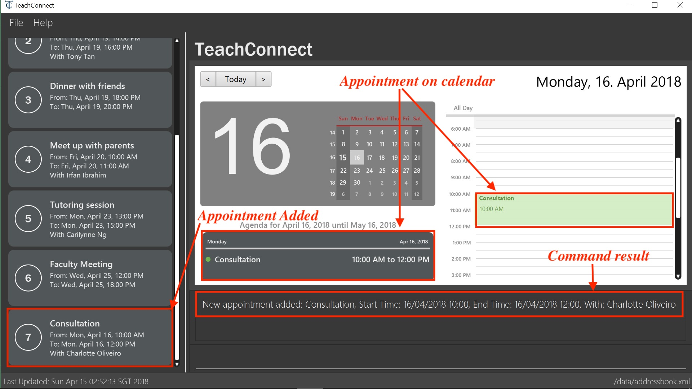

Project: TeachConnect
TeachConnect is a contact and event management application designed for teachers and educational professionals.
TeachConnect is designed to best aid users who prefer to enter input using keyboard instead of Graphical User Interface (GUI).
Code contributed:
Functional code
Test code
Portfolio Purpose
This portfolio was made to document all contribution I have made to the project.
The content includes are:
-
The external behavior of my contributions
-
The justification for their implementation
-
Details of the implementation
Setting up an appointment : set_appointment [since v1.3]
Sets up an appointment with the specified contact.
Format: set_appointment t/TITLE s/START_DATE START_TIME e/END_DATE END_TIME i/INDEX
Examples:
-
set_appointment t/Tutoring session s/02/04/2018 19:00 e/02/04/2018 20:00
Sets up an appointment on April 2nd, 2018, from 7pm to 8pm.Figure 3: Appointment added successfully example
Setting up a task : set_task [since v1.3]
Sets up a task to be done by a deadline.
Format: set_task t/TITLE e/END_DATE END_TIME
Examples:
-
set_task t/Mark papers e/05/04/2018 10:00
Sets a task which needs to be completed before April 5th, 2018, 10am.
End of Extract
Justification
These features make it easier for teachers and educational staff to review appointments they have set with students and parents, or to review the list of tasks they have to do before a certain deadline.
Event Management
Current Implementation
There are two types of events: an Appointment or a Task.
The model for event are shown below:

Appointment consist of 4 variables:
-
Title: Hold description for the appointment
-
Start Time: Hold the starting time of the appointment
-
End time: Hold the end time of the appointment
-
Person to meet: (optional) Hold the target in the appointment
Task consist of 2 variables:
-
Title: Hold description for the task
-
Time: Hold the time the task is expected to be finished
Commands supported for each event
-
Set
-
Remove
-
Edit
Similar to UniquePersonList and UniqueTagList, UniqueEventList is linked
to AddressBook. Request to change to the AddressBook model is signalled through ModelManager.
Design Considerations
Aspects : Implementation of set event
-
Alternative 1 (current choice): user can still set appointment/task with the starting time/deadline already elapsed.
-
Pros: Might be useful if the users want to keep track of past events.
-
Cons: Not the most intuitive implementation and might be prone to error from the user side.
-
-
Alternative 2: user can only set appointment/task with the starting time/deadline in the future
-
Pros: Is the more intuitive approach and can prevent the user from keying in "redundant" events
-
Cons: As TeachConnect fetches the current time from the user’s system, if the user for some purposes set the system’s time to deviate from world clock, some difficulties may arise when he/she wants to add new event.
-
End of Extract
Changing GUI theme : theme [since v1.4]
Changes the theme of the GUI.
Format: theme THEME_NAME
Examples:
-
theme dark
Changes the theme of TeachConnect to Dark Theme.
Figure 5: GUI with Dark Theme
-
theme galaxy
Changes the theme of TeachConnect to Galaxy Theme.
Figure 6: GUI with Galaxy Theme
End of Extract
Justification
This feature allows the user to customize the GUI of TeachConnect to their own liking and set the GUI colour to one that is most pleasant to their eyes.
Enhancement Proposed (for Version 2.0)
-
More classifications for existing contacts: i.e:
student,staff,friendinstead of juststudent. -
A
get guardiancommand which allows the user to quickly retrieve contact detail of the guardian of a student in the contact list.
Other contributions
-
Tag Colour for Person tags
-
Toggle Calendar View command
-
Modification
listcommand to toggle list displayed on GUI. -
2 new themes for GUI:
lightandgalaxy -
Project issues assignment and management
-
Project PR review
-
Bugs fixes for various issues raised by other teammates and testers
-
User Guide
-
Commands usage
-
Demo images
-
-
Test Coverage